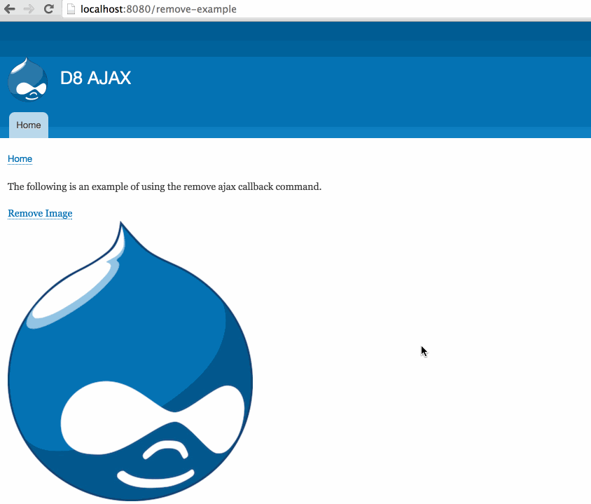

#midcamp
@WeAreGenuine
D8 AJAX /
Michael Miles
Demystifying AJAX Callback Commands
(in Drupal 8)
MidCamp 2016 - #midcamp
Goals of this Session
- Explain AJAX callback commands
- Demonstrate AJAX callback commands
- Outline creating AJAX callback commands
Michael Miles
From: Boston, MA USA
Work: Genuine @WeAreGenuine(.com)
Exp: Working with Drupal since 2008.
Twitter: @mikemiles86
Drupal.org: mikemiles86
All the Places: mikemiles86
mike-miles.com
What are AJAX Callback Commands
- Functions used for all AJAX requests
- PHP code that instructs JavaScript
- Defined by Drupal core and other modules
- 25 core commands
Client Side
- Attached to global JavaScript object
- Drupal.AjaxCommands.prototype
- Wrapper for additional Javascript
- Takes three arguments:
- ajax
- response
- status
Core Example: Remove Command JS
Drupal.AjaxCommands.prototype = {
// ...
/**
* Command to remove a chunk from the page.
*
* @param {Drupal.Ajax} [ajax]
* @param {object} response
* @param {string} response.selector
* @param {object} [response.settings]
* @param {number} [status]
*/
remove: function (ajax, response, status) {
var settings = response.settings || ajax.settings || drupalSettings;
$(response.selector).each(function () {
Drupal.detachBehaviors(this, settings);
})
.remove();
},
//...
misc/ajax.jsServer Side
- PHP class that implements CommandInterface
- Must define a 'render' method
- Must return an associative array
- Must have element with key of 'command'
- Value is name of JavaScript method
- Can contain other array elements
Core Example: Remove Command PHP
namespace Drupal\Core\Ajax;
/**
* AJAX command for calling the jQuery remove() method.
* ...
*/
class RemoveCommand Implements CommandInterface {
// ...
/**
* Implements Drupal\Core\Ajax\CommandInterface:render().
*/
public function render() {
return array(
'command' => 'remove',
'selector' => $this->selector,
);
}
}
core/lib/Drupal/Core/Ajax/RemoveCommand.phpSummary
Using AJAX Callback Commands
- Attach AJAX to page elements
- Attach Drupal AJAX JavaScript library
- Return commands in an AjaxResponse
Example: Remove Command
1. Attach AJAX to page elements
- Render array: '#ajax' attribute
- Links: 'use-ajax' class
- bit.ly/Drupal8Ajax
Example: Attach AJAX to link
public static function demo($show_image = TRUE) {
// ...
// Build route parameters.
$parameters = array('method' => 'nojs');
// Build link options.
$options = array('attributes' => array('class' => array('use-ajax')));
// Build remove link from route.
$remove = Link::createFromRoute(
t('Remove Image'),
'remove_example.remove',
$parameters,
$options
);
// Add link to output render array.
$output['wrapper']['remove'] = $remove->toRenderable();
// ...
// Return render array.
return $output;
}
modules/remove_example/src/Controller/RemoveExampleController.php2. Attach Drupal AJAX JavaScript library
- Render array: "'#attached']['library'][]" array
- Modules: 'libraries' in .info.yml
- Templates: {{ attach_library() }} function
Example: Attach to render array
public static function demo($show_image = TRUE) {
// ...
// Build route parameters.
$parameters = array('method' => 'nojs');
// Build link options.
$options = array('attributes' => array('class' => array('use-ajax')));
// Build remove link from route.
$remove = Link::createFromRoute(
t('Remove Image'),
'remove_example.remove',
$parameters,
$options
);
// Add link to output render array.
$output['wrapper']['remove'] = $remove->toRenderable();
// Attach the ajax library.
$output['#attached']['library'][] = 'core/drupal.ajax';
// Return render array.
return $output;
}
modules/remove_example/src/Controller/RemoveExampleController.php3. Return commands in an AjaxResponse
- Define callback route and method
- Use 'addCommand' method
- Include command class(es) with 'use' operator
Example: Return AjaxResponse of commands
use Drupal\Core\Ajax\AjaxResponse;
use Drupal\Core\Ajax\RemoveCommand;
class RemoveExampleController extends ControllerBase {
// ...
public static function remove($method = 'nojs') {
// Using AJAX to remove the image?
if ($method == 'ajax') {
$response = new AjaxResponse();
$response->addCommand(new RemoveCommand('#example_remove_wrapper'));
return $response;
}
// Graceful degradation for non ajax call.
else {
// Return output of demo method, without showing image.
return self::demo(FALSE);
}
}
// ...
}
modules/remove_example/src/Controller/RemoveExampleController.phpCustom AJAX Callback Commands
Creating AJAX Callback Commands
- Add function to 'Drupal.AjaxCommands.prototype'
- Define an object that implements CommandInterface
1. Add function to 'Drupal.AjaxCommands.prototype'
2. Define an object that implements CommandInterface
Using Custom AJAX Callback Commands
- Define custom JavaScript library
- Attach library to page
- Add command to AjaxResponse object in callback
1. Define custom JavaScript library
2. Attach library to page
3. Add command to AjaxResponse object in callback
Review
Feedback
@mikemiles86
#midcamp
Thank You!
Questions?
Background image modified version of "Chicago Bean" by Sergey Gabdurakhmanov (https://www.flickr.com/photos/gabdurakhmanov/3751502079)